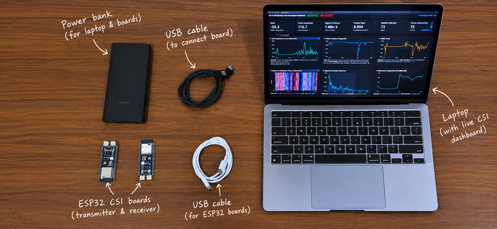
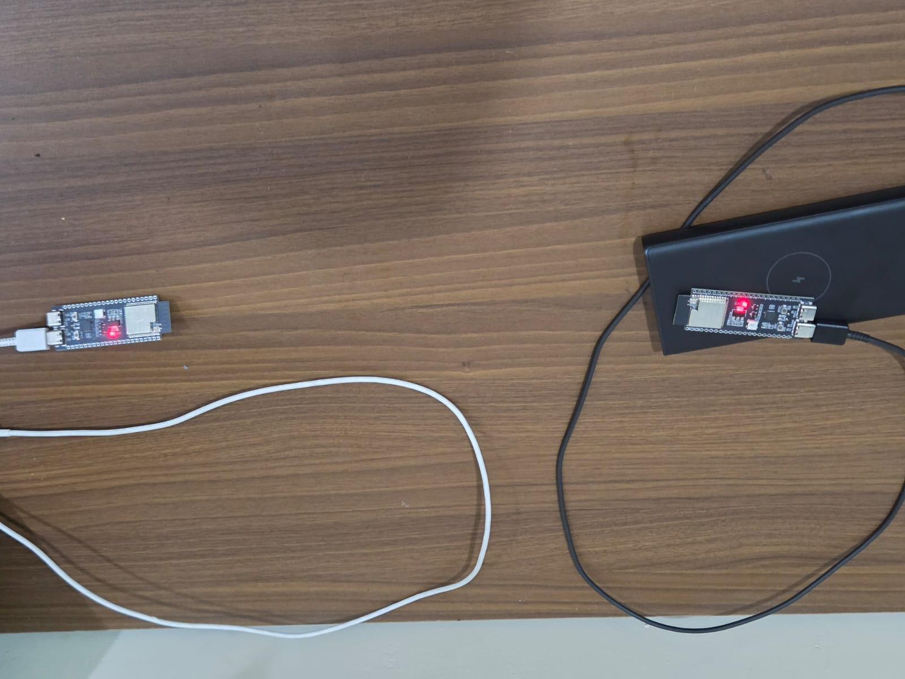
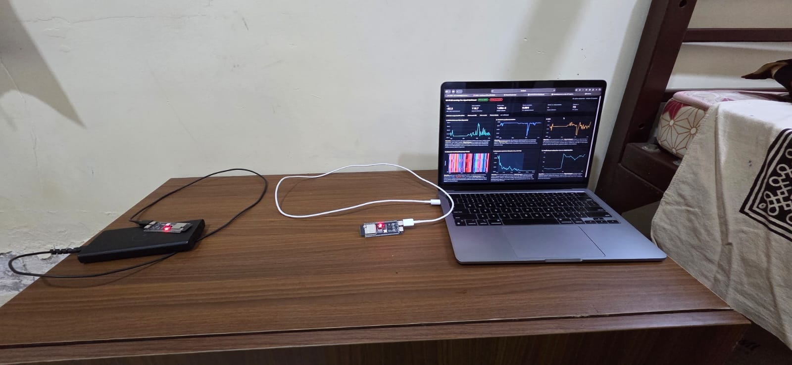

Propagation
The transmitted signal reaches the receiver through a combination of paths, not just one straight line.
MULTIPATH CHANNELExploring how Wi-Fi Channel State Information responds to changes in the space between transmitter and receiver.
A person is not the only thing that changes a radio channel. The challenge is to separate meaningful movement from ordinary environmental variation.
01 — THE CHALLENGEWi-Fi CSI provides channel measurements across subcarriers. Those measurements can shift as signals travel through a space, reflect from surfaces and encounter moving objects.
The transmitted signal reaches the receiver through a combination of paths, not just one straight line.
MULTIPATH CHANNELMovement in the environment can alter the received channel pattern over time.
TIME-VARYING RESPONSEInterference, device placement and static objects can also change measurements, so controlled experiments matter.
ROBUST VALIDATIONWhere the project stands: the current prototype focuses on ESP32 CSI acquisition and exploratory visualization. Human-presence classification and through-wall performance remain future validation goals.
The documented workflow connects wireless measurement, CSI acquisition, record parsing and dashboard visualization. Labelled evaluation is the next research stage.
ESP32-based wireless communication
RADIO PROPAGATIONReceive and log channel measurements
ESP32 HARDWAREValidate fields and inspect signal data
DATA PIPELINEExplore signal plots and indicators
DASHBOARDWhat can be stated from the supplied capture log — and what still needs firmware-level confirmation.
Controlled presence / absence recordings, verified CSI interpretation and testing on held-out environments.



These equations explain the signal model and candidate features. The report does not claim that all of these transformations have already been applied to the supplied raw array.
A channel estimate can be represented by in-phase (I) and quadrature (Q) components for subcarrier k at time t.
SIGNAL REPRESENTATIONAmplitude describes the magnitude of the complex channel measurement. It can be tracked across time and subcarriers.
DERIVED FEATUREPhase describes the angle of the complex measurement. Hardware offsets and phase reliability require careful handling.
DERIVED FEATUREBk is the mean amplitude from an N-sample reference window. The difference highlights deviations from a recorded baseline.
PROPOSED PREPROCESSINGMean amplitude over T samples provides a compact summary of a subcarrier's signal level within a window.
CANDIDATE FEATUREVariance measures how much amplitude fluctuates within the window. It may help distinguish stable and changing channel conditions.
CANDIDATE FEATUREThe supplied capture log was parsed and checked for structure. These are measured properties of the available file — not evidence of a trained detector or an accuracy score.
| Record marker | CSI_DATA | Observed |
|---|---|---|
| Examined channel-related field | 11 throughout inspected log | Observed |
| Reported CSI-length field | 256 throughout inspected log | Observed |
| Integer entries in final field | 256 per inspected record | Observed |
| Array parsing errors | 0 in inspected records | Observed |
The project presentation, research paper and full report are included with this website repository. Open them directly in your browser or download a copy.
Presentation slides for the Project Vedhak prototype.
Acquisition and exploratory signal visualization for human presence sensing.
System architecture, hardware, data inspection, results and validation plan.
Presenting author
Co-author
Co-author